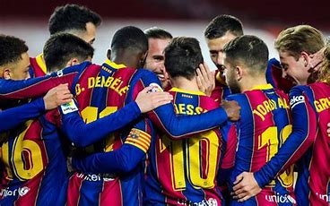
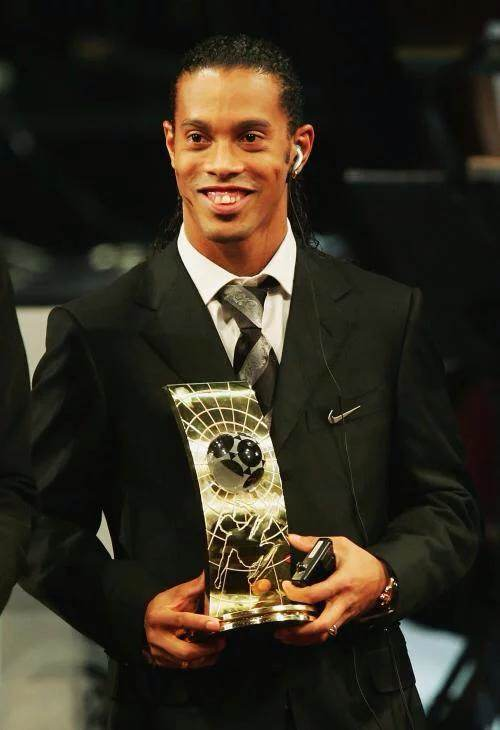

足球奖项
-

团队奖项
足球项目在劳伦斯体育奖最佳团队奖一直是强劲竞争者，劳伦斯年度最佳团队奖2000年开始评选，曼联足球队、法国国家足球队、巴西国家足球队、希腊国家足球队、意大利国家足球队、中国奥林匹克代表团、西班牙国家足球队、巴萨足球队、拜仁慕尼黑足球队先后获奖。
-

个人奖项
足球界个人的最高荣誉有以下四个奖项：
第一，由足球的最高组织机构国际足联评出的“世界足球先生”(由各国家队主帅投票选出)。该项奖从1991年开始评选。
第二，由法国的《法国足球》杂志评选出的“金球奖”也叫“欧洲足球先生”(由欧足联52个成员的体育媒体的资深记者选出)。该奖项从1956年开始评选，1994年以前评选对象局限为欧洲球员，1995年之后扩大为在欧洲效力的所有球员。
第三，由国际职业球员联盟（FIFPro）评出的“世界最佳球员”(由足球职业球员选出)。该奖项从2005年开始评选。
第四，由英国的《世界足球》杂志评选出的“世界足球先生”，现在通称“世界最佳球员”(由球迷选出)该奖项从1982年开始评选。
四个奖项分别由不同的人群选出，代表了不同阶层的观点和呼声，都有一定的代表性。第一个同时获得四大奖项的球员是2005年的罗纳尔迪尼奥。